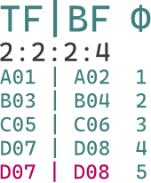

欢迎阅读！本教程仅算盲人摸象的业余分析，仅具备业余参考价值。若有什么不会的可以加群691892901。点击图片即可更改桌面和移动端的适配排版。
逐行扫描通过一行行从左到右地刷新像素来构建图像，是最为常用的屏幕刷新方式。交错扫描的方法不同，它使用 YUV 4:1:1 采样，将屏幕的奇数像素行视为一个场，偶数像素行视为另一个场。这两个场在录制时错开一定时间，这样在模拟电视上观看时会产生 60fps 的视觉效果。交错扫描的原理是为了节省模拟电视信号的频段区间（与收音机接收电台信号一样）。因此，通过在时间上分隔行来节省空间，可以几乎将每个频道的频宽减半，例如（\(525 \text{行} \times 30\text{fps} = 15.75 \text{MHz}\)）。
在播放或检查隔行扫描源的属性时，所谓的帧数 fps 值实际上是 2 倍于帧数的场数 fields per second。逐行扫描转换为隔行扫描的称为交错 Interlacing，反之则称为去隔行 Deinterlacing。同时，为了进一步修复剩余的梳状横纹 Combing artifacts，通常会使用去梳 Decomb 滤镜做后处理。
一般情况下，自动滤镜组能够自动检测并转换交错源到逐行，如下拉源 pulldown 和假下拉源 fake pulldown：
以电影的 24fps 逐行扫描标准，通过成比例地重复上场或下场来制造一小部分的「一帧三场」，以将场率拉伸到 NTSC 的 60 场每秒（60fps）或 PAL 的 50 场每秒（50fps）。这种处理过程称为 telecine。理论上 telecine 有无限种实现方式。
由于当今的显示设备都使用逐行扫描，因此「一帧三场」的老影片需要恢复到「一帧二场」才能准确播放，这种处理过程称为 inverse telecine。相对于“仅交错”的区别是帧率要恢复到电影标准的 24fps，而不是保持原样。
「一帧四场」的情况。这种源会造成播放卡顿而应该不存在。此处仅用于说明右图。图：用 Φ 表示一帧被分为两场，上场为奇数、下场为偶数。可见第四帧由 D07 的上场，D08 的下场组合出来，而原来的第五帧被后延，添入了 D07，D08 而实现了「一帧四场」。已知 24fps 的电影格式若分成 4 帧一组，则一共有 6 组可分，而每组多了一套上场下场就代表每秒多出了 6 帧，或 12 场，相加得到 30fps（或按照“场每秒”则算作 60 fps），从而符合了 NTSC 电视的帧率要求。至于 2:2:4:2 以及其它格式，单纯是被重复帧的相对位置不同所造成的。
一系列的同类 telecine。有的单纯是被重复帧的相对位置不同，有的是重复规律不同。
3:2:3:2：24fps 视频的第一帧拷上场，第三帧拷下场得到。每 10 场删除 3，5 或从零数 2，7 恢复
2:3:2:3：24fps 视频的第二帧拷上场，第四帧拷下场得到。每 10 场删除 5，10 或从零数 4，9 恢复
3:2:2:3：24fps 视频的第一帧拷上场，第四帧拷下场得到。每 10 场删除 3，10 或从零数 2，9 恢复
2:3:3:2：24fps 视频的第二帧拷上场，第三帧拷下场得到。每 10 场删除 5，8 或从零数 4，7 恢复
3:3:2:2：24fps 视频的第一帧拷上场，第二帧拷下场得到。每 10 场删除 3，6 或从零数 2，5 恢复
2:2:3:3：24fps 视频的第三帧拷上场，第四帧拷下场得到。每 10 场删除 7，10 或从零数 6，9 恢复
代表 PAL 电视（25fps 或 50 场每秒）直接播放 24fps 视频。唯一缺点是视频略快于音频，需要注意音频流被加速（二压）以匹配视频的问题。如果是游戏机原生生成和录制则没有音频流被加速的问题，但最好的处理方法是于游戏机内部关闭转分行的滤镜，然后就能录制出原生的逐行视频了。
24fps 电影标准转换为 PAL 视频时，每 12 帧拷一上场，每 24 帧拷一下场，加快到每秒 50 场（50fps）。IVTC 即每 50 场删除第 23 场和第 48 场（从零开始数即第 22 场和第 47 场）。
「一帧半场/一场占一帧」的原生录制交错源。
画中画 Picture in picture 代表两个画面层叠到一起的样式。此处代表剪辑师没有纠正两种不同下拉素材，而直接层叠混用的画面问题。
剪辑师没有统一两种不同帧率，不同下拉处理格式的素材，而前后拼接混用所造成的画面问题。有时称为可变帧率下拉源 VFR pulldowns
| ♟滤镜 | 简介 | 兼容性 |
|---|---|---|
| fieldmatch | IVTC 的关键滤镜，基本是 AviSynth 场匹配脚本的TFM。少另半或处理后仍 combed 的场则糊上并留标记给下列插值滤镜修补 | ffmpeg AviSynth(+) VapourSynth |
| decimate | 删除重复帧的简单滤镜，严格说唯独 fieldmatch+decimate=IVTC，原生交错的源不存在 pulldown 拉出的重复场所以单纯反交错时不加 | |
| yadif yadif_cuda |
同时参考时域空域临近像素的经典插值滤镜 | |
| bwdif bwdif_cuda bwdif_vulkan |
基于 yadif 与 w3fdif，能够在帧内帧间参考。支持多种 GPU 渲染器 | |
| nnedi3 | 神经网络插值的 bobbing-edi 滤镜，但因 EDI 特性而只参考帧内，动态复杂时可能在帧间连贯上劣于 bwdif | |
| QTGMC | 调用 nnedi3 等多种反交错滤镜+mvtools 动态补偿反交错脚本 SuperFast 及更慢下用 nnedi3 Slower 及更慢下做色度动态搜索 设置 EZKeepGrain 以 (据个人喜好) 留噪 |
AviSynth(+) VapourSynth |
| ivtc_txt60mc | 用于上述的 PIP 情况，如 24t/24d，60i/30p两两混合等需手动测量并标记的段落，点此查看说明 |
-vf "yadif-deint=all"
fieldmatch 滤镜整理并标记上下场，yadif 滤镜启用 -deint=interlaced 以跟踪 fieldmatch 所留的标记：
-vf "fieldmatch=mode=pc_n_ub:combmatch=full,yadif=deint=interlaced,decimate" -vsync 0 -r 24-r）重新设置帧率到电影标准的 24fps-deint=all 而用-deint=interlaced 以跟踪 fieldmatch 标记，用 send_field 设定场率=帧率-vf "fieldmatch=combmatch=full,bwdif=mode=send_field:parity=auto:deint=interlaced" -vsync 0从 send_field 模式改为 send_frame，用参数 -r 24 修改帧率，decimate 模式删除多余的场。
-vf "fieldmatch=mode=pc_n_ub:combmatch=full,bwdif=mode=send_frame:parity=auto:deint=interlaced,decimate" -vsync 0 -r 24-vf "fieldmatch=mode=pc_n_ub:combmatch=full:blockx=16:blocky=24:combpel=128,nnedi=weights=C:\点击下载训练数据\nnedi3_weights.bin:field=af:nns=n32:qual=slow:etype=mse,decimate" -vsync 0 -r 24ffmpeg 的 fieldmatch 滤镜中，p/c/n 表示尝试匹配当前场的另一半场的前一场（previous）、同一场（current）或后一场（next）。否则会尝试使用 u/b，即从另一半场尝试匹配 uǝxʇ（next 反）和 bɹǝʌᴉons（previous 反）。
（仅展示）其它工具也可以照着这个例子，修改格式实现。素材拼接多重下拉源 Spliced pulldowns 需要分割视频段。
Trim(0, 579).SeparateFields().SelectEvery(10, 1,2,3,4, 6,7,8,9).Weave() +\
Trim(580, 51891).SeparateFields().SelectEvery(10,0,1,2,3, 5,6,7,8 ).Weave() +\
Trim(51892, 70278).SeparateFields().SelectEvery(10,0,1,2, 4,5,6,7, 9).Weave() +\
Trim(70279, 112304).SeparateFields().SelectEvery(10,0,1, 3,4,5,6, 8,9).Weave() +\
Trim(112305,124545).SeparateFields().SelectEvery(10,0, 2,3,4,5, 7,8,9).Weave() +\
Trim(124546, 0).SeparateFields().SelectEvery(50,1,2,3,4,5,6,7,8,9,10,11,12,13,14,15,16,17,18,19,20,21,22,23,24,26,27,28,29,30,31,32,33,34,35,36,37,38,39,40,41,42,43,44,45,46,47,48,49).Weave()“自动”包括了处理素材拼接多重下拉源。
LWLibavVideoSource("<源>")
# Pass1：分别导出 TFM 和 TDecimate 分析结果
# 导出 TFM 分析结果
tfm(PP=5,cthresh=5,MI=60,output="tfm-matched.txt")
# 注：
# order=-1 自动判断上下场优先（默认值）
# mode=5 检查 p/c/n + u/b
# slow=1 使用中速场匹配 fieldmatch 检测算法（默认值）
# PP=6 使用三次多项式插值 cubic interpolation 去梳
# MI=60 判断“问题像素”的数量阈值，低于阈值则不算（默认 80）
# output 导出文件
# 导出 TDecimate 分析结果
tdecimate(mode=4,output="tdec-metrics.log")
# mode=4 导出反交错分析结果
# output 导出文件
# Pass2： 模式 5 - VFR+pass=2（需 hybrid=2，cycleR=1）
# 导入 TFM 分析结果并进行场重组和去梳
tfm(input=tfm-matched.txt)
# 导入 TFM 和 TDecimate 分析结果
tdecimate(mode=5,vidDetect=1,hybrid=2,vfrDec=0,conCycleTP=5,input="tdec-metrics.log",tfmIn="tfm-matched.txt",mkvOut="导出时间码.txt")
# 注：
# conCycleTP 是模式 5 下可用的特殊 conCycle，设置 hybrid 大于 0 时的最少检测任意视频段的循环次数
# hybrid=2 指定视频段处理方法为导出为 mkv 时间码文件
# vfrDec=0 删除循环中最为相似的帧
# vfrDec=1 删除循环中连续重复最长的帧，适用于动画
# conCycleTP 控制删帧强度，最小值2。值越大循环检查次数越多，删帧次数越多
# input 导入 TDecimate 分析结果
# tfmIn 导入 TFM 分析结果“自动”包括了处理素材拼接多重下拉源。
import vapoursynth
from vapoursynth import core
import havsfunc as haf
import mvsfunc as mvf
# 使用 L-SMASH-Works 导入源
src = core.lsmas.LWLibavSource("<源>")
# 指定输入源，上场优先(1)，p/c+n+u/b 模式匹配(3)
match = core.vivtc.VFM(src, 1, mode=3)
# QTGMC反交错，指定输入已匹配场的源，上场优先，帧率=0.5 场率，低速预设，边缘预填充防抖
deint = haf.QTGMC(match, TFF=True, FPSDivisor=2, Preset="Very Slow", Border=True)
# 对VFM选出含_Combed标记的帧, 替换为QTGMC反交错过的帧.
# FilterCombed清除所有_Combed标记, 而后处理源(post-processed_clip)记做非交错源.
pp_clip = mvf.FilterCombed(match, deint)
# Decimate删重复帧，res.set_output()，pp_clip.set_output()可预览
res = core.vivtc.VDecimate(pp_clip)